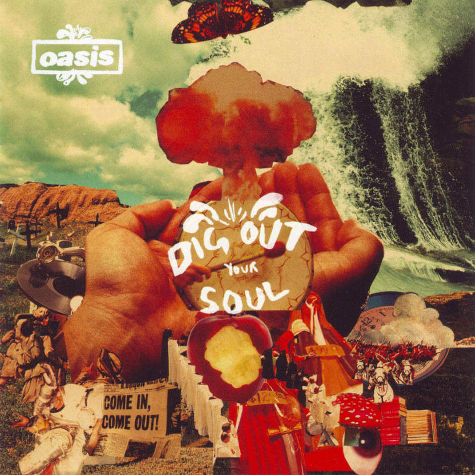

ALBUMS
7TH. Dig Out Your Soul
영국의 밴드 오아시스의 일곱번째 정규 앨범. 2008년 10월 6일 전세계에 발매되었다. 이전 작이었던 Don't Believe The Truth가 절반의 성공을 거두었음에도 불구하고 여전히 아쉬운 평가가 주를 이뤘지만, 이 앨범으로 인해서 다시 원래의 컨디션을 되찾았다는 평가를 받기도 하면서 'Morning Glory 이후 최고의 앨범’이라는 호평을 받게 된다. 앨범은 2007년에 애비 로드 스튜디오에서 주로 녹음되었다. Be Here Now의 안 좋은 추억이 있었던 곳이었지만 갤러거 형제가 마약에서 멀어지겠다고 다짐한 뒤 절치부심했던 만큼 팬들의 기대치는 컸다. 결과는 성공적이었다. 일단 2000년부터 이어졌던 사이키델릭한 실험들과 로큰롤, 그루브한 리듬 등이 섞이면서 발매 전부터 팬들에게 전성기를 다시 되찾을지도 모른다는 기대감을 품게 해준 앨범이었다. 들리는 것과 달리 전체적으로 기타의 비중보다는 오히려 오르간, 키보드, 콜라주된 배경 사운드의 비중이 높은 편이다. 모든 멤버가 2~3곡 정도의 고른 비중을 차지했던 6집에 비해서 7집은 컨셉부터 전체적으로 노엘의 입김이 강하게 들어간 앨범이며, 곡 제작 및 선별 과정도 노엘이 컨셉을 정하고 그에 맞는 곡을 나머지 멤버들이 가지고 오는 식으로 이루어졌다. 이 앨범에서는 리암 갤러거가 'I'm Outta Time'과 'Ain't Got Nothing', 'Soldier On'을 작곡했고, 여기에 앤디 벨이 'The Nature Of Reality'를, 겜 아처는 'To Be Where There's Life'를 작곡하였다.
1. Bag It Up
노엘이 라디오에서 들은 Pretty things의 'Baron Saturday'의 리듬 패턴에서 영감을 얻어 쓴 곡이다. 한번도 라이브 무대에서 연주된 적이 없어 팬들의 아쉬움을 사곤 한다.
2. The Turning
이 곡과 Bag It Up은 노엘이 겜의 집에 있는 스튜디오에 놀러갔을 때 드럼을 쳐가며 작곡한 곡이라고 한다. 가장 기존의 오아시스스럽지않은 곡이다. 예전 매드체스터 배기 씬의 사운드를 연상케 하는 건반음과 함께 시작한다. 월드 오브 트위스트의 토니 오의 명복을 기리는 곡이기도 하다. 여전히 비틀즈를 사랑한다는 것을 증명하듯이 마지막에 'Dear Prudence'를 연주해서 집어넣었다.
3. Waiting For The Rapture
둔탁하고 묵직한 비트와 종교적인 언급이 담긴 러브송. 노엘이 본 앨범에서 가장 자랑스럽게 여기는 곡중 하나다. 이 곡과 Bag It Up, Soldier On의 드럼 트랙은 노엘이 연주하였다. 노엘이 말하길 사라(현재의 부인)를 처음 만났을 때의 순간에서 영감을 얻은 곡이라고 한다. 원래는 좀 더 발라드에 가깝게 만들려했지만 그냥 헤비하게 갔다고...
4. The Shock Of Lightning
7집 첫 싱글 곡. UK 차트 3위를 기록했다. Rock N Roll Star를 연상시키는 곡으로 모 평을 인용하자면 '손가락을 전기 플러그에 꽂은 듯한' 곡. 전반적으로 조화가 잘 된 연주가 일품인데, 사실 거의 데모나 마찬가지인 상태라고 한다. 별로 손보지 않은 데모 상태의 생생함이 들어있다고. 간주 부분에 이어지는 잭 스타키의 드럼 솔로는 필청. 전반적으로 노엘 본인이 좋아하는 곡인 스미스의 'The Queen Is Dead'와 비슷하다.
5. I’m Outta Time
리암 갤러거 작곡. 7집 두 번째 싱글 곡. 발라드 곡으로써 UK 차트 12위에 올랐다. 리암에게는 아쉬운 일이지만, 이 싱글로 인해서 오아시스의 싱글 연속 top 10 기록이 깨진다. 하지만 음악적으로는 흔히 리암의 오아시스 시절 만든 곡들 중 최고의 노래로 꼽히곤 한다. 아웃트로에 존 레논이 사망하기 이틀 전인 1980년 12월 6일, BBC Radio 1에서 있었던 인터뷰 육성이 샘플링되어 있다. 딱히 트리뷰트를 위해 삽입한 것은 아니라고 한다. 릴리 알렌이 커버한 적이 있다.
6. (Get Off Your) High Horse Lady
원래 7집에 실릴 예정이었던 데모곡 (I Wanna Live In A Dream In My) Record Machine[8]과 Come On! It's Alright의 보컬 녹음이 리암이 결혼식을 이유로 자리를 비우면서 불발되고 만다. 이 때문에 남는 자리를 채울 트랙이 필요했는데, 그래서 결국 비사이드 수준 정도의 곡 두 개가 대신 들어가게 되었고 그게 이 곡과 Ain't Got Nothin'이다. 이 곡의 경우 Heathen Chemistry 당시에 만들어두었던 데모를 노엘이 그루브하게 편곡하고 겜이 기타를 보완해 완성했다고. 데모 편곡이니만큼 노엘이 부른 곡이다. 아웃트로가 Falling Down과 이어진다.
7. Falling Down
7집 세번째 싱글 곡. UK 차트 10위. 90년대 당시 케미컬 브라더스와 작업했던 Setting Sun이나 3집 앨범의 Fade In-Out 등에서 보여줬던 사이키델릭의 연장선상. 노엘 본인이 수년간 쓰고 싶었던 종류의 음악이었다고. 노엘은 이 곡을 어느 초가을에 자기 집 뒷마당에 앉아서 석양을 보다가 환경 문제 같은 걸 혼자 생각하던 도중에 이 노래를 쓰게 되었다고 한다. 전반적으로 노엘이 늘 그렇듯이 비틀즈의 Tomorrow Never Knows에서 영향을 많이 받았다.
8. To Be Where There’s Life
겜 아처 작곡. Funky한 드럼에 사이키델릭한 색채와 싯타르 연주가 돋보인다. 싯타르는 앤디 벨이 연주했다고 한다. 이 곡의 가사에서 "Dig Out Your Soul"이란 구절이 나오는데 이 구절이 앨범의 제목이 되었다. 앨범 수록곡 중 유일하게 기타 연주가 수록되지 않은 곡이다.
9. Ain’t Got Nothing
리암 갤러거 작곡. 2000년대 초반 5집 투어 도중, 리암이 독일 호텔 바에서 싸움에 휘말렸을 때를 생각하며 쓴 곡이라고 한다. 곡의 간주 도중에 당시 술집에서의 싸움을 묘사한 듯한 사운드가 들어있다. 겜이 말하길 "리암은 이 곡이 크림(밴드)의 진저 베이커가 드럼을 치는 더 후처럼 들리길 원했다. 싸움이 벌어지는 와중에 연주되는 것처럼.“
10. The Nature Of Reality
앤디 벨 작곡. 앨범 제작 당시에 앤디는 5곡을 써서 자기 마음에 드는 순서대로 노엘에게 보여줬는데, 노엘은 앨범 분위기에 맞는다는 이유로 5번째 곡을 선택했다는 일화가 전해진다. 그 다섯번째 곡이 바로 이 곡. 앤디는 내심 이 곡이 선택되지 않기를 바랐는데, 이 곡은 앤디의 결혼 생활이 원만하지 않았을 때 쓰여진 곡이기 때문. 전체적으로 슈게이징 사운드가 돋보인다. 그런데 이 곡을 녹음할 당시 앤디는 전혀 연주하지 않고 룸에서 사운드를 잡기만 했다.
11. Soldier On
리암 갤러거 작곡. 2004~5년 즈음에 리암이 겜과 함께 곡을 만들어 놓고 잊어버리고 있다가 더 코랄의 제임스 스켈리에 의해 하드 디스크에서 뒤늦게 발굴된 곡. 노엘의 말에 의하면 리암은 술취한 상태로 이 곡을 써서 기억을 못했다고 한다. 그러나 리암은 자신은 이 곡을 앨범에 수록할 것을 강하게 주장했으나 매번 노엘에게 무시당했다고 주장했다.
+) Time Flies... 1994-2009
오아시스의 진짜 마지막 앨범이다. 오아시스의 두번째 컴필레이션 앨범으로 2010년 6월 14일에 발매되었다.